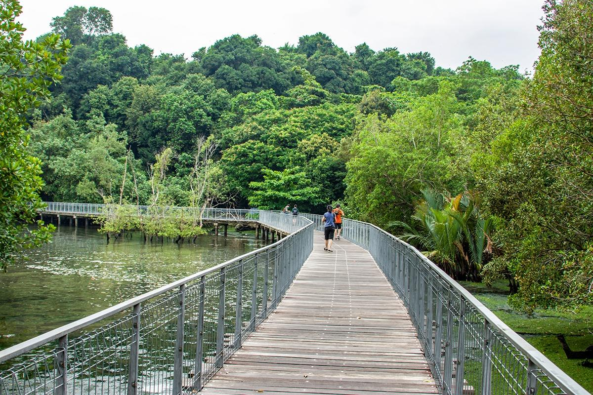

열대기후 맞춤형 도시 인프라(1)
열대기후
기상정보
열대기후 맞춤형
도시 인프라(1)
열대기후 맞춤형
도시 인프라(2)

원인: 열대기후— 강수량↥
시설: 맹그로브 나무 숲
-> 물이 범람하는 것 방지해야 함
: - 맹그로브는 뿌리로 호흡을 하기 때문에
뿌리의 일부가 문어 다리처럼 수면 위로 노출되어 있음.
- 뿌리는 산소를 빨아들이는 역할과 함께
강한 파도에도 맹그로브가 쓰러지지 않도록 지탱해 주는 역할을 함.
- 촘촘한 구조로 바닷물의 소금을 걸러내는 여과 기능도 있음.